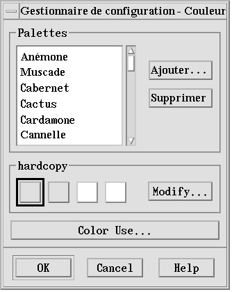

Personnalisation de l'environnement CDE
Pour personnaliser l'aspect du Bureau, utilisez le Gestionnaire de configuration.
Personnalisation de l'aspect de l'écran146 |
Personnalisation du comportement du système153 |
Personnalisation du lancement et de la déconnexion158 |
Lancement du Gestionnaire de configuration
Cliquez sur l'icône du Gestionnaire de configuration dans le Tableau de bord.
La liste ci-dessous répertorie les éléments du Gestionnaire de configuration et décrit leur fonction.
Couleur |
Couleurs et palettes de l'espace de travail. |
Police |
Taille des polices d'applications. |
Fond |
Motifs du fond de l'espace de travail. |
Clavier |
Volume sonore du clavier et caractéristiques de répétition des touches. |
Souris |
Paramètres de la souris (affectation des boutons, vitesse du double clic, accélération et seuil de déplacement du pointeur). |
Bip |
Volume, tonalité et durée du signal sonore. |
Ecran |
Caractéristique de l'économiseur et du verrouillage de l'écran. |
Fenêtre |
Caractéristiques d'activation des fenêtres et de l'emplacement des icônes de fenêtres. |
Lancement |
Paramètres de lancement et de fin de session. |
Intl' |
(Localisation) Ce dispositif de contrôle
n'apparaît que s'il est approprié à l'emplacement actuel.
Il vous permet de sélectionner la méthode d'entrée à
utiliser au cours de la session suivante d'entrée en connexion, ainsi
que la méthode d'entrée de pré-édition. Pour des
détails complémentaires, consultez le |
Personnalisation de l'aspect de l'écran
Vous pouvez modifier les caractéristiques suivantes:
couleurs de l'espace de travail
fond de l'espace de travail
taille de la police
Couleurs
Les couleurs de l'espace de travail sont définies à l'aide d'une palette de couleurs. Le nombre de couleurs qui la composent est fonction du type d'écran utilisé et de la valeur de l'option Nombre de couleurs.
La valeur par défaut de ce paramètre est Autres couleurs pour applications (nombre minimal de couleurs pouvant être utilisées sur un écran haute définition). Pour augmenter le nombre de boutons de couleurs, sélectionnez Autres couleurs pour le Bureau dans la boîte de dialogue Nombre de couleurs, puis relancez la session en cours.
Vous ne pouvez pas disposer d'un nombre de couleurs supérieur au nombre maximal pris en charge par l'écran, mais vous pouvez réduire le nombre de couleurs utilisées en sélectionnant une valeur inférieure dans la boîte de dialogue Nombre de couleurs.
Par exemple, si vous avez sélectionné Autres couleurs pour le Bureau et que vous voulez exécuter une application utilisant beaucoup de couleurs telle qu'une application de CAO sur un écran haute définition, vous devez choisir Autres couleurs pour applications ou Totalité des couleurs pour applications pour réduire le nombre de couleurs utilisées par le Bureau. Les couleurs restantes sont alors disponibles pour le programme de CAO.
Boutons de couleurs
Le type d'écran utilisé et la valeur du paramètre Nombre de couleurs déterminent le nombre de couleurs qui composent une palette. La boîte de dialogue Couleur peut contenir deux, quatre ou huit boutons de couleurs, qui contrôlent les couleurs utilisées dans les différentes zones de l'écran.
Si vous disposez de huit boutons de couleurs, ils sont utilisés comme suit (de gauche à droite et de haut en bas):
Cadre des fenêtres actives.
Cadre des fenêtres inactives.
Sélecteur d'espace de travail (bascule entre l'espace de travail 1 et les espaces supplémentaires: 5, 9, etc.).
Zones de texte et listes.
Arrière-plan de la fenêtre principale et bascule entre l'espace de travail 4 et les espaces supplémentaires (8, 12, etc.).
Arrière-plan des boîtes de dialogue et des barres de menus, et bascule entre l'espace de travail 3 et les espaces supplémentaires (7, 11, etc.).
Sélecteur d'espace de travail (bascule entre l'espace de travail 2 et les espaces supplémentaires: 6, 10, etc.).
Arrière-plan du Tableau de bord.
Si vous disposez de quatre boutons de couleurs, ils sont utilisés comme suit (de gauche à droite):
Cadre des fenêtres actives.
Corps des fenêtres:
Cadre des fenêtres inactives.
Arrière-plan et barres de menus de la fenêtre principale et des boîtes de dialogue.
Arrière-plan du Tableau de bord.
Sélecteurs d'espaces de travail et arrière-plans.
Zones de texte et listes.
Si vous disposez de deux boutons de couleurs, ils sont utilisés comme suit (de gauche à droite):
Cadre des fenêtres actives.
Tous les autres éléments.
Sélection d'une palette l
Cliquez sur l'icône Couleur du Gestionnaire de configuration.
Sélectionnez une palette dans la liste des palettes.
Cliquez sur OK.
Les couleurs du Bureau proviennent de palettes de couleurs prédéfinies. La boîte de dialogue Couleur répertorie les palettes fournies avec le système et celles que vous avez choisies.
Modification d'une palette
Cliquez sur l'icône Couleur du Gestionnaire de configuration.
Sélectionnez une palette dans la boîte de dialogue Couleur.
Cliquez deux fois sur un bouton de couleur pour afficher la boîte de dialogue Modification des couleurs, oucliquez sur un bouton de couleur, puis sur Modifier.
Définissez les niveaux de couleur (rouge, vert et bleu) ainsi que la luminosité et la teinte, à l'aide des règles correspondantes.
L'ancienne et la nouvelle couleur s'affichent dans la partie supérieure gauche de la boîte de dialogue.
Cliquez sur OK dans la boîte de dialogue Modification des couleurs.
Reprenez les étapes 2 à 4 pour chaque couleur à modifier.
Cliquez sur OK dans la boîte de dialogue Couleur.
Saisie d'une couleur de l'espace de travail
Cliquez sur l'icône Couleur du Gestionnaire de configuration.
Sélectionnez une palette dans la boîte de dialogue Couleur.
Cliquez deux fois sur un bouton de couleur pour afficher la boîte de dialogue Modification des couleurs, ou cliquez sur un bouton de couleur, puis sur Modifier.
Cliquez sur Saisir couleur pour afficher le pointeur de saisie.
Amenez le pointeur sur la couleur de l'écran à saisir.
Cliquez sur OK pour tenir compte de la nouvelle couleur soit prise en compte.
Il s'agit d'une couleur supplémentaire utilisée par le Bureau (une couleur en moins pour les applications).
Création d'une palette personnalisée
Pour créer une palette personnelle, il suffit de copier une palette existante, puis de la modifier .
Cliquez sur l'icône Couleur du Gestionnaire de configuration.
Sélectionnez Ajouter dans la boîte de dialogue Couleur.
Tapez le nom de la nouvelle palette et cliquez sur OK dans la boîte de dialogue Ajouter la palette.
Modifiez la palette.
Cliquez sur OK dans la boîte de dialogue Couleur.
Cette opération crée une copie de la palette en cours, à laquelle vous attribuez un nom unique et que vous pouvez ensuite modifier (ce qui permet de garder intacte la palette d'origine).
Suppression d'une palette
Cliquez sur l'icône Couleur du Gestionnaire de configuration.
Sélectionnez la palette voulue dans la liste des palettes.
Cliquez sur le bouton Supprimer.
Cliquez sur OK dans la boîte de dialogue Supprimer la palette.
Lorsque vous supprimez une palette, le Gestionnaire de configuration
ajoute le signe ~ devant son nom et conserve la copie ainsi renommée
dans le répertoire
Rétablissement d'une palette supprimée
Ouvrez une vue du Gestionnaire de fichiers du répertoire
Dans le cas des palettes système, supprimez le fichier ~
Dans le cas des palettes utilisateur, renommez la palette supprimée de ~
Fermez le Gestionnaire de configuration, puis relancez-le.
Modification du nombre de couleurs utilisées par le Bureau
Cliquez sur l'icône Couleur du Gestionnaire de configuration.
Sélectionnez Nombre de couleurs dans la boîte de dialogue qui s'affiche.
Sélectionnez le nombre de couleurs utilisées par le Bureau.
Pour plus de détails, reportez-vous à la section
Activez l'espace de travail sur lequel afficher le fond.
Cliquez sur l'icône Fond du Gestionnaire de configuration.
Sélectionnez un fond.
Cliquez sur Appliquer.
Polices
La taille de police sélectionnée dans le Gestionnaire de configuration est utilisée pour les titres de fenêtre et le texte. Toute modification sera prise en compte lors du prochain lancement des applications (la nouvelle police n'est pas appliquée dans les fenêtres déjà ouvertes).
Sélection d'une taille de police
Cliquez sur l'icône Police du Gestionnaire de configuration.
Sélectionnez une taille de police.
Cliquez sur OK.
Personnalisation du comportement du système
Vous pouvez modifier les éléments suivants:
volume sonore du clavier et caractéristiques de répétition des touches
paramètres de la souris (affectation des boutons, vitesse du double-clic, accélération et seuil de déplacement du pointeur)
volume, tonalité et durée du signal sonore;
mise en veille de l'écran
activation des fenêtres, déplacement et comportement des icônes
Comportement du clavier
Cliquez sur l'icône Clavier du Gestionnaire de configuration.
Définissez les paramètres suivants :
Répétition automatique : indique si les caractères doivent être répétés lorsque les touches sont maintenues enfoncées.
Volume du clic: volume sonore du clavier (désactivé lorsque vous indiquez 0 %).
Cliquez sur OK pour sauvegarder les modifications, ou sur Défaut pour rétablir les valeurs par défaut.
Comportement de la souris
Cliquez sur l'icône Souris du Gestionnaire de configuration.
Définissez les paramètres suivants :
Configuration de la souris: inverse les fonctions des boutons 1 et 3.
Bouton 2: indique si le bouton du milieu doit être utilisé pour étendre les sélections (ajustement) ou pour faire glisser et poser des objets (transfert). Si vous choisissez la première fonction, les transferts seront effectués à l'aide du bouton 1.
Double-clic: indique le délai maximal entre deux clics. Pour tester la nouvelle vitesse, utilisez la case prévue à cet effet (la modification sera prise en compte lors de la prochaine connexion).
Accélération: définit la vitesse de déplacement du pointeur à l'écran.
Seuil: distance, en pixels, devant être parcourue par le pointeur à vitesse réduite, avant que l'accélération soit appliquée.
Cliquez sur OK pour sauvegarder les modifications, ou sur Défaut pour rétablir les valeurs par défaut.
Volume du signal sonore

Cliquez sur l'icône Bip du Gestionnaire de configuration.
Définissez les paramètres suivants :
Volume: volume du signal sonore (désactivé lorsque vous indiquez 0 %).
Tonalité: fréquence du signal sonore (de 82 à 9000 Hz).
Durée: longueur du signal sonore.
Cliquez sur OK pour sauvegarder les modifications, ou sur Défaut pour rétablir les valeurs par défaut.
Ecran sans extensions de verrouillage
Vous pouvez personnaliser la veilleuse écran ou les paramètres
de verrouillage du Tableau de bord, ou bien rétablir les valeurs par
défaut. Si l'écran supporte le verrouillage automatique, reportez-vous
à la section “Ecran avec extensions
de verrouillage“, page 156
Sur un écran couleur, si les couleurs vives restent affichées trop longtemps, le tube cathodique risque d'être endommagé. Pour éviter cet incident, vous disposez de la fonction de veilleuse écran.
Modification des paramètres de la veilleuse écran
Cliquez sur l'icône Ecran du Gestionnaire de configuration.
Définissez les paramètres suivants :
Veilleuse écran: activée (En fonction) ou désactivée (Hors fonction) immédiatement la veilleuse écran. Lorsque vous sélectionnez En fonction, la règle “Démarrage mise en veille” est activée.
Démarrage mise en veille: nombre de minutes devant s'écouler entre la dernière frappe de touche ou le dernier déplacement du pointeur et le déclenchement de la veilleuse. Toute modification est prise en compte immédiatement, avant même que vous sélectionniez OK.
Cliquez sur OK pour sauvegarder les modifications, ou sur Par défaut pour rétablir les valeurs par défaut.
Modification des paramètres de verrouillage du Tableau de bord
Cliquez sur l'icône Ecran du Gestionnaire de configuration.
Définissez les paramètres suivants :
Utiliser les arrière-plans pour verrouillage: active les arrière-plans de verrouillage.
Verrouillage transparent: désactive les arrière-plans de verrouillage.
Liste des arrière-plans: répertorie les arrière-plans disponibles; il s'agit d'une liste à sélection multiple. Pour sélectionner ou désélectionner un élément, cliquez dessus. Le dernier arrière-plan sélectionné s'affiche en regard de la liste.
Temps par arrière-plan: durée (en minutes) d'exécution de chaque arrière- plan avant le lancement du suivant. L'ordre d'exécution respecte celui de la liste. Si vous indiquez la valeur 0 (zéro), seul le dernier arrière-plan sélectionné (celui affiché dans la zone de prévisualisation) est utilisé.
Cliquez sur OK pour sauvegarder les modifications, ou sur Par défaut pour rétablir les valeurs par défaut.
Ecran avec extensions de verrouillage
Vous pouvez personnaliser l'économiseur ou les paramètres de verrouillage de l'écran, ou bien rétablir les valeurs par défaut. Si votre écran ne prend pas en charge le verrouillage automatique, reportez-vous à la section
Cliquez sur l'icône Ecran du Gestionnaire de configuration.
Définissez les paramètres suivants :
Veilleuse écran: active (En fonction) ou désactive (Hors fonction) immédiatement l'économiseur d'écran. Lorsque vous sélectionnez En fonction, la règle “Démarrage mise en veille” est activée.
Liste des économiseurs: répertorie les économiseurs d'écran disponibles; il s'agit d'une liste à sélection multiple. Pour sélectionner ou désélectionner un élément, cliquez dessus. Le dernier économiseur d'écran sélectionné apparaît en regard de la liste, dans une fenêtre de prévisualisation.
Démarrage mise en veille: nombre de minutes devant s'écouler entre la dernière frappe de touche ou le dernier déplacement du pointeur et le déclenchement de l'économiseur. Toute modification est prise en compte immédiatement, avant même que vous sélectionniez OK.
Temps par arrière-plan: durée (en minutes) d'exécution de chaque économiseur avant le lancement du suivant.
Cliquez sur OK pour sauvegarder les modifications, ou sur Par défaut pour rétablir les valeurs par défaut.
Modification des paramètres de verrouillage de l'écran
Cliquez sur l'icône Ecran du Gestionnaire de configuration.
Définissez les paramètres suivants :
Verrouillage de l'écran : active (En fonction) ou désactive (Hors fonction) le verrouillage automatique de l'écran. Toute modification est prise en compte immédiatement, avant même que vous fermiez la boîte de dialogue.
Si l'économiseur et le verrouillage d'écran sont activés (En fonction) et que le délai de lancement du verrouillage est inférieur à celui de l'économiseur, lorsque le premier arrive à expiration, les économiseurs d'écran sélectionnés remplacent l'écran de verrouillage. Si elle est supérieure, l'économiseur est remplacé par l'écran de verrouillage.
Si l'économiseur est désactivé (Hors fonction) et que le verrouillage automatique est activé (En fonction), aucun économiseur ne s'affiche à l'expiration du délai de verrouillage.
Lancer le verrouillage: délai (en minutes) devant s'écouler entre la dernière frappe de touche ou le dernier déplacement du pointeur et le verrouillage de l'écran. Toute modification est prise en compte immédiatement, avant même que vous sélectionniez OK.
Cliquez sur OK pour sauvegarder les modifications, ou sur Par défaut pour rétablir les valeurs par défaut.
Fenêtres
Vous pouvez modifier les paramètres d'activation des fenêtres, le mode d'affichage des fenêtres actives et l'emplacement des icônes de fenêtres.
Modification du comportement des fenêtres
Cliquez sur l'icône Fenêtre du Gestionnaire de configuration.
Définissez les paramètres suivants :
Activation au pointeur: l'entrée du pointeur dans une fenêtre entraîne son activation.
Activation à la sélection (clic) : l'activation d'une fenêtre est déclenchée par l'entrée du pointeur, accompagnée d'une pression sur le bouton gauche de la souris.
Cliquez sur OK pour sauvegarder les modifications.
Cliquez sur OK lorsque vous êtes invité à relancer le Gestionnaire de l'espace de travail.
Modification du mode d'affichage des fenêtres actives
Cliquez sur l'icône Fenêtre du Gestionnaire de configuration.
Définissez les paramètres suivants :
Passage fenêtre premier plan si activée: lorsqu'une fenêtre est activée, une représentation partielle de cette fenêtre passe en haut de la pile.
Passage des fenêtres principales en haut de pile: permet d'afficher les fenêtres principales devant les fenêtres secondaires lorsque vous cliquez dessus.
Affichage contenu durant déplacement: lors d'un déplacement, le contenu de la fenêtre reste affiché, au lieu du cadre seulement.
Cliquez sur OK pour sauvegarder les modifications.
Cliquez sur OK lorsque vous êtes invité à relancer le Gestionnaire de l'espace de travail.
Modification de l'emplacement des icônes de fenêtres
Cliquez sur l'icône Fenêtre du Gestionnaire de configuration.
Définissez les paramètres suivants :
Dans la boîte d'icônes : range les icônes dans une boîte.
Position sur l'espace de travail: place les icônes de fenêtres sur le fond de l'espace de travail.
Cliquez sur OK pour sauvegarder les modifications.
Cliquez sur OK lorsque vous êtes invité à relancer le Gestionnaire de l'espace de travail.
Personnalisation du lancement et de la déconnexion
Vous pouvez modifier les caractéristiques suivantes:
session à ouvrir à la connexion
session initiale
affichage d'un message de confirmation de déconnexion
Lorsque vous vous connectez au Bureau, vous ouvrez une session, appelée session en cours. Par défaut, lorsque vous vous déconnectez, cette session est sauvegardée, puis restaurée lors de la connexion suivante.
Vous pouvez également sauvegarder une session initiale, que vous pourrez rétablir sans tenir compte de la session en cours.
Modification du mode lancement de la session suivante
Cliquez sur l'icône Lancement du Gestionnaire de configuration.
Définissez les paramètres suivants :
Reprendre session en cours: à la prochaine connexion, la session sera restaurée en l'état précédant la déconnexion (les modifications de paramètres, clients ou ressources seront prises en compte).
Revenir à la session initiale: à la prochaine connexion, la session que vous avez identifiée comme initiale sera ouverte.
Pour définir une nouvelle session initiale en fonction de l'environnement en cours, sélectionnez Enregistrer la session initiale.
Cliquez sur OK pour enregistrer les modifications.
Définition de la session initiale
Avant d'effectuer cette opération, sélectionnez et sauvegardez les paramètres de lancement de votre choix.
Cliquez sur l'icône Lancement du Gestionnaire de configuration.
Sélectionnez Enregistrer la session initiale.
Cliquez sur OK dans la boîte de dialogue de confirmation qui s'affiche.
Cliquez sur OK dans la boîte de dialogue Lancement.
Si vous n'avez pas encore défini de session initiale, la session système par défaut est ouverte lorsque vous sélectionnez Revenir à la session initiale.
Confirmation de déconnexion
Cliquez sur l'icône Lancement du Gestionnaire de configuration.
Dans la zone Boîte de confirmation de déconnexion, sélectionnez En fonction ou Hors fonction.
Si vous sélectionnez En fonction, une boîte de dialogue s'affichera chaque fois que vous entrerez la commande de déconnexion.
Cliquez sur OK.